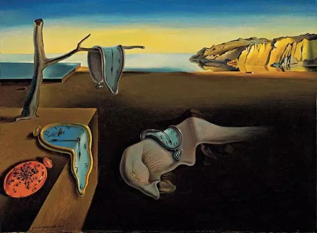
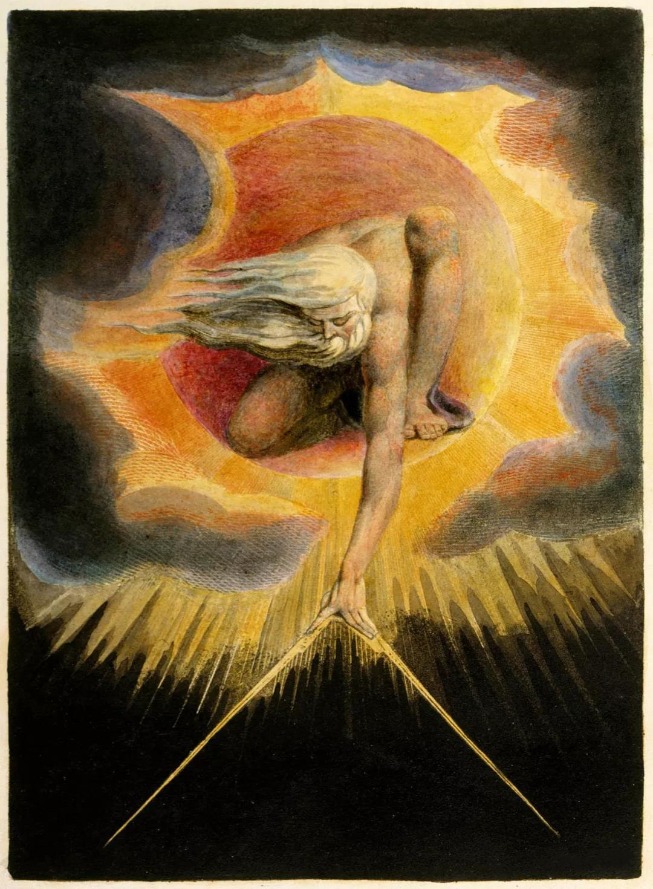

深度文章

超现实主义美术画派
超现实主义的哲学和理论基础是黑格尔的辩证法和主观唯心主义哲学家柏格森的直觉主义。柏格森提倡生命冲动、直觉和心灵感应等非理性的表现。
弗洛伊德的精神分析学说（潜意识、梦的解析、自由联想法）对超现实主义艺术具有直接的、最重要的影响。根据弗洛依德的观点，梦是无意识、潜意识的一种最直接表现形式，是本能在完全不受理性控制下的一种发泄，它揭露了人们灵魂深处隐秘的本质。超现实主义艺术创作试图突破符合逻辑与实际经验的现实观念,使之与本能﹑潜意识和梦的经验相融合,以达到一种绝对的和超现实的情境。这种不受理性和道德观念束缚的美学观念,促使艺术家们自由的使用写实﹑象征和抽象的手法来表现原始的冲动,促使自由意象的释放。超现实主义呈现人的深层心理中的形象世界，强调偶然因素的结合，如同梦幻一般杂乱无序，是潜意识的表现和象征。
安德烈·布雷东 André Breton 在1924年发表的第一篇《超现实主义宣言》中为超现实主义所下的定义是：“超现实主义，纯粹的精神的自动主义，企图运用这种自动主义，以口语或文字或其他的任何方式去表达真正的思想过程。它是思想的笔录，不受理性的任何控制，不依赖于任何美学或道德的偏见。”他说：“应当感谢弗洛伊德的发现。由于相信这些发现，一股思潮形成了。”他提出超现实主义追求超自然、无意识、无理性的精神自由。

两大创作体系
超现实主义者在创作方法上的两大体系：“偏执狂批判”和“心理自动化”，正是发源于弗洛伊德的潜意识和情意结的学说。所谓“偏执狂批判”，指挖掘潜意识境界的一种执拗的思维方式。例如梅拉•奥本海姆的作品《皮毛早餐》，画家运用偶然并置的手法，把茶具和兔子的皮毛两种毫不相干的事物硬凑在一起。“心理自动化”是追求一种下意识或无意识的随意性，所谓浮想连翩，没有任何理性和逻辑的约束。汉斯·阿尔普的“随机拼贴”就是将纸张碎片随意抛洒在一张大的平面上，并将它们粘贴在落下的位置，自然拼合成一幅画。
超现实主义的传播跨越了两次世界大战，从1919年至1969年，本章涉及两个阶段：1919－1924年为第一阶段，基本上与达达主义平行，布雷东称这个时期为“直觉的时期”；1924－1936年为第二阶段，即按照自己的原则行动的时期，达达主义已经消亡，布雷东称这个时期为“推理的时期”。

超现实主义的主要风格是自然主义的超现实主义（又被称为古典的超现实主义），以精细的细部描绘为特征，看起来既精细逼真，又遥远陌生。通过可以识别的经过变形的形象和场景，来创造一种不受意识和理性控制的形象，营造出幻觉的和梦境的画面。代表画家有达利、马格利特、德尔沃、伊夫·唐吉等人。
超现实主义的另一种风格被称为有机的超现实主义（也被称为绝对的超现实主义），追求作画过程的无意识性，在画面上出现纯粹受心理作用支配的意象，充满幻想的、与生命力相关的抽象画面。这与奥本海姆、阿尔普等人所做的偶然机遇和无意识行为的试验有关联。代表画家是米罗、马克思·恩斯特、安德烈·马宋、马塔等。
追溯超现实主义的源头，早在18世纪末，英国艺术家们就开始创作与梦境、幻想有关的作品。英国画家亨利·弗赛里（西方艺术史：１８世纪英国美术-亨利·弗赛里的梦幻哲理世界【68】）、英国诗人兼画家威廉·布莱克（西方艺术史：１８世纪英国美术-浪漫主义的诗人画家威廉·布莱克【68】），都可谓是超现实主义的先驱。

超现实主义运动拓宽了美术表现领域,使艺术家充分发挥自己的想象力和幻想力，并运用各种手段进行制作,创造画境。在达达主义基础上发展起来的超现实主义，摒弃了达达主义推翻一切的态度，吸收了达达主义及传统和自动性创作的观念。同野兽主义和立体主义相比，野兽主义和立体主义侧重的是表现形式“怎样画”的问题，虽然不依照传统方法去画，但是他们的内容仍然是传统的人物、风景和静物。而超现实主义者侧重的则是“画什么”的问题，画面超越了真实客观世界的“荒诞”，是精神世界中的内容。
超现实主义美术展览于20年代在巴黎、哥本哈根和特纳里夫、伦敦、纽约等地都有举行,参加的美术家有毕加索、J.阿尔普、克利、G.基里科、M.杜桑、F.皮卡比亚、马格里特和达利。30年代后，超现实主义运动逐渐沉寂。二战后很多此派画家从巴黎转移到美国，超现实派绘画从欧洲影响到北美大陆。1969年10月4日，许斯特在《世界报》发表最后一个超现实主义宣言《第四章》，指出“超现实主义运动已经没有任何内部的一致，我的一些朋友和我本人于二月份决定将它放弃，它和我们再也没有关系。”它宣告了这场运动的结束，但是它一直对20世纪美学观念有着重要影响。

留言你的想法
返回上级
评论
小羊小羊每天数羊
2020.6.15 10:30 pm相当有感觉，喜欢这种无厘头的简单
顾展眉94
2020.6.1 3:10 pm几年前我梦到有人在我眉心额头的位置取石头，每个人头上都有一颗金刚石，阴影了好久...结果今天看到这些画跟梦里的感觉一模一样